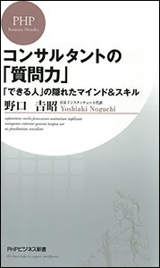
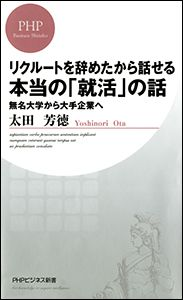

| PHPビジネス新書電子版ベスト50 2014 PHP電子 | |
| PHP研究所 | |
| (2015) | |
PHPビジネス新書電子版ベスト50
2014
PHP研究所 編
はじめに
2014年12月、PHP研究所の電子書籍の配信タイトル数が4000点を超えました。
販売数も伸び、電子書籍ユーザーが確実に増えていることを私たちも実感した一年でした。
PHP研究所は1946年、松下幸之助によって創設されました。現在に至るまで多数の書籍を刊行してまいりましたが、常に企業で働く方にとって必要な知識や情報を提供すべく、出版活動を続けております。
その中でもPHPビジネス新書は、「血の通った実務書」をコンセプトに、「現場を知る人が本音で語る」知識をビジネスのあらゆる分野においてご提供することを掲げて刊行されています。
2006年の創刊から2014年12月までに342点が刊行され、そのうち245点が電子版として配信されています。
常にビジネスパーソンのニーズを探り、その要請に応えながら発刊されるPHPビジネス新書を俯瞰すると「ビジネスの潮流」が見えてきます。
この電子書籍は、そんなPHPビジネス新書電子版の2014年における売上ベスト50をご紹介するものです。
PHPビジネス新書の売上ランキングを眺めると、ビジネスの現場でどんな情報が求められているのかが浮かび上がってきます。ランキング中には2014年刊のみならず、過去のタイトルも多く興味深いものとなっています。
ぜひとも、このランキングから皆様の分析を展開してみてください。そして興味を持たれたPHPビジネス新書をご一読いただければ幸甚です。
2015年1月8日 PHP研究所 電子出版部
【本電子書籍について】
○本電子書籍に掲載したランキングは2014年1月から12月1日までの全電子書籍販売ストアの売上を集計し、PHPビジネス新書電子版を抽出したものです。
○各ページ末の「電子書籍の詳細ページはこちら 」の「こちら 」の文字をタップまたはクリックすると、書籍の商品詳細ページに遷移します。
○本電子書籍中で一部、漢字が簡略体で表示される場合があります。
2014年 PHPビジネス新書（電子版）
第1位
「話す」「書く」「聞く」能力が仕事を変える！ 伝える力
池上彰
2007年刊
わかっているつもり、では伝わりません。伝えるために話すこと、聞くこと、書くことを徹底して考えたジャーナリストの究極の方法とは？
商談や会議、プレゼンテーションや企画書・報告書の作成、電話での交渉、メールでの連絡――ビジネスの現場で行なわれている日常業務。仕事の「できる」「できない」を左右するのは、意外とこうした基礎をしっかりやるかどうか。それには上司や部下、顧客とのコミュニケーションをいかに円滑にするかが鍵を握る。
本書は「話す」「書く」「聞く」の3つの能力の磨き方を紹介。これができると自ずと成績・業績に結びつくもの。長年NHKの『週刊こどもニュース』のお父さん役を務めてきた著者（現在はフリージャーナリストとして独立）ならではの極意を伝授する。伝えることの難しさを身をもって経験しているだけに、ビジネスの現場でも十分応用が効く智恵が盛りだくさんである。
相手を惹きつける、ビジネス文書を書く、文章力をアップさせるなど、本書の秘訣を習得すれば、仕事が楽しく、やりやすくなること間違いなしだ。
電子書籍の詳細ページはこちら
2014年 PHPビジネス新書（電子版）
第2位
世界のエリートの「失敗力」 彼らが＜最悪の経験＞から得たものとは
佐藤智恵

2014年刊
一流大学のMBA入学資格にはなぜ「失敗から学んだ経験」があるのか。世界は完璧な人ではなく、転んでなお立ち上がる人を求めている。
ハーバード、スタンフォード、マッキンゼー、BCG、ゴールドマン・サックス、グーグル、トヨタ自動車、ソニー、電通、三井物産、三菱商事......その貴重な実話から学ぶ！
「あなたは失敗から何を学びましたか？」
世界最高峰の組織では、この質問への回答が、あなたを評価する重要な要素となる。今、グローバルリーダーに最も求められるのが「失敗力」だからだ。
本書では、トップクラスの経営大学院の授業と、世界で活躍する12名の日本人エリートの実話から、身につけるべき「失敗力」の実情を探る。
「大の大人が泣き出すほど厳しい『失敗シミュレーション』とは？」「華やかな経歴の人が、こんな挫折を乗り越えていたなんて！」......多くの驚きとともに、挑戦欲をかきたてられる内容だ。
電子書籍の詳細ページはこちら
2014年 PHPビジネス新書（電子版）
第3位
戦略プロフェッショナルが選んだフレームワーク115
丹生光
2013年刊
数々のトップ企業を指導した「戦略のプロ」が、有名なものからオリジナルのものまで、使えるフレームワーク115個と活用法を説く！
部署から人員が削減されていくのに、「数字目標を達成しろ」「売れる商品をつくれ」「資料を出せ」「期日を守れ」。一人で二人分、三人分の仕事をこなすことが求められていく――。どうにかして、仕事を効率化したい！
そんな多忙なビジネスパーソンを救うべく、25社以上の超有名上場企業を中心に支援して「SWOT分析」「4P・4C」「ロジックツリー」「PDCA」「7S（セブンエス）」「AIDMA（アイドマ）」「ブレイクスルーメソッド」......。よく聞くけど意外と知らない、最強の思考ツールをこの1冊で網羅しました。さらに、あらゆる業務を加速するために考え抜いたマル秘ツールも初公開。
問題解決力、分析力、戦略力、計画力、提案力、企画開発力、ブランド力、経営力を高めるための、前代未聞、トータル115件のフレームワークがこの1冊に収録！
これらのフレームワークを使えば......→自分の考えがサクサク整理され、深められます！→思考が共有され、スムーズにコミュニケーションできます！→会社の戦略が分かりやすく図式化され、分析や戦略立案ができます！
電子書籍の詳細ページはこちら
2014年 PHPビジネス新書（電子版）
第4位
大資産家になるためのアジア副業マニュアル 100万円から実現できる人生改革
澤木恒則
2014年刊
港区、マニラ、セブ、バンコクに住居を構え、アジアでのビジネスに成功した著者が、これから10年アジアで大富豪となる秘密を伝授！
今こそ企業も個人もアジアの風に乗るべき時。本書は正に成功のカギを示した必読の書だと思う。――ソニー元社長 安藤国威
米プレデンシャル・フィナンシャル日本法人設立に30歳で参画し、36歳で取締役。44歳でフィリピン現地法人の社長、その後東京海上グループやソニー生命保険を渡り歩いた著者。生保業界のエリート営業管理職が、自身の体験をもとに、アジアで稼ぎ、大資産家となる方法を伝授！
しかも、その変化はあまりに急だ。産業革命以上ともいわれるインパクトのなか、私たちはいま何を経験しているのか。そもそも一世を風靡した「ウェブ2.0」からウェブはどう変貌し、どこに向かおうとしているか。インターネット黎明期からネットの進化と歩をともにした著者が本書で示すのは、ウェブ2.0以降の座標軸とこれからの羅針盤である。
内容例を挙げると、◎語学力で飛躍するアジアの若者vs.陳腐な内容を日本語のみでしか話せない日本の若者 ◎人口ボーナスで見る世界、沸騰するアジア ◎収入源と運用、リスク分散の考え方―マネー力幼稚園児の日本 ◎なぜ、三カ国に住居、資産をもつことが有効なのか ◎合法的運び屋となるために ◎移動は経費ではなく投資である ◎住む場所が変われば人生は劇的に変わる 等々
アジアビジネスのチャンスをつかむための一冊！
電子書籍の詳細ページはこちら
2014年 PHPビジネス新書（電子版）
第5位
「一体感」が会社を潰す 異質と一流を排除する＜子ども病＞の正体
秋山進
2014年刊
「感情的な議論」「身内のルール優先」「自社にしかわからない言葉を使う」......「子どもの論理」ばかりで動く組織に警鐘を鳴らす。
戦後、これに類似した組織形態をとり、成長してきたのが日本企業だ。一体感を高め、仲間意識を醸成し、皆で一所懸命、同じ目標に向かって力を合わせてきた。バブル崩壊までは、それが勝利の方程式だったのだ。
しかしいつの間にか、大人の仕事場であるはずの会社において、社員たちは、子どもの仲良しグループのように馴れ合い、一流の人材を排除しはじめた。
それどころか、個人の成長さえ妨げられ、未熟な大人たちが跋扈している。まさに組織と人が〈子ども病〉に罹患してしまったのである。
しかも、この病気の〈症状〉は、先輩たちが必死に築き上げてきた次のようなところにこそ表れる。
◎強い仲間意識
◎愛社精神
◎忠誠心の強い部下
◎あうんの呼吸
◎明確な指揮命令系統
◎厳格なルールとマニュアル
◎スムーズな会議
はたして日本企業は、これらの"美徳"を手放すことができるのか？
本書は、25年以上にわたり、30社以上の組織に経営改革のための助言をしてきた組織コンサルタントが、社会経済の変化とキャリアパスに潜む問題から、この重篤な病気を喝破する。そして、大人の組織が備えるべき3つの条件と、個人が一流の仕事人になるための10の戦略を説く。
実は、意識の高い経営者や人事担当者は、うすうすこの病気に気づいている。
しかし、対症療法しか行われない。なぜなら彼らにとって、部下や社員は未熟な子どものままの方が、都合がいいからだ。
一見して、温かく居心地のよい職場で働く人こそ、危ない。＜感染＞を恐れる優秀な人材の逃亡は、もう始まっているのだ。幼稚な組織と心中しないために、一刻も早く読むべき一冊。
電子書籍の詳細ページはこちら
2014年 PHPビジネス新書（電子版）
第6位
伝える力 2 もっと役立つ！ 「話す」「書く」「聞く」技術
池上彰
2011年刊
180万部のベストセラー、ついに続編が登場。もっと伝わる話す・聞く・書く技術はもちろん、敬語やツイッターなど新トピックスも！
前作のわかりやすさはそのままに、著者がテレビや報道の現場で学んできた「もっと思いが伝わる」話し方、書き方、聞き方を伝授します。
「東日本大震災と伝える力」「総理の演説力」といった最新のトピックスから、「怪しい敬語」「教科書がわかりにくい理由」「ツイッター」「日本語の乱れ」といったテーマまで盛りだくさん。
「心をつかむプレゼンのコツ」「相手の答えが間違っていたら？」など、具体的ノウハウも多数収録しています。
ビジネスマンはもちろん、「夫や子どもに伝わらない」という女性や、生徒への伝え方に悩む先生、国語力を磨きたい学生や高齢者の方まで、幅広く役立ち、楽しめる一冊です。
そして、「実は私も話しベタだった！」という池上さんの意外な過去の話も......。
あなたも努力次第できっと「伝える力の達人」になれると実感できる一冊です。
電子書籍の詳細ページはこちら
2014年 PHPビジネス新書（電子版）
第7位
2022―これから10年、活躍できる人の条件
神田昌典
2012年刊
未曾有の危機を迎えた日本。だが、そんな今こそチャンスだと著者が言い切る理由とは？ カリスマが初めて明かす渾身のキャリア論。
「あと数年で会社はなくなる」
「中国は2025年まで発展、日本は2020年以降、崖から転がるように落ち込む」
「iPhoneは2016年に製造終了」
......本書で語られる、衝撃的な予言の数々だ。
「客観的にみれば、日本を取り囲む状況は、真っ暗。にもかかわらず、「これからの日本は、チャンスに溢れている」と著者は言い切る。しかし、それは「今希望を描き、行動を起こす」ことを選んだ人のみ。つまり、今この瞬間のあなたの選択こそが、これから10年、活躍できるか、後悔する人生を送るかのターニングポイントなのだ。
「これからの10年はどうなる？」
「日本人だけがつかめるチャンスとは？」
「若手ビジネスパーソンが今、すべきこととは？」
「30代・40代の役割とは？」
......答えはすべて、本書の中にある！
カリスマ経営コンサルタント・神田昌典が満を持して送る渾身の人生論、ついに完成。
電子書籍の詳細ページはこちら
2014年 PHPビジネス新書（電子版）
第8位
出光佐三 反骨の言 魂 日本人としての誇りを貫いた男の生涯
水木楊
2012年刊
戦後日本人が意気消沈する中、国に逆らい日章丸をイランに派遣した出光。海賊と呼ばれた男の半生を活写し、その熱き言葉を披瀝する。
大正の初め、関門海峡で、「海賊」と呼ばれる男がいた。「海に下関とか門司とかの線でも引いてあるのか」と言い放ち、燃料油を売りまくった。数年後、男は満州に乗り込み、メジャー石油会社と闘い、潤滑油納入を勝ち取る。そして英国がイランと国交断絶し、ペルシャ湾に英国海軍が待ち受ける中、大海へと乗り出した。
戦後日本人が意気消沈する中、米英を欺き、国家官僚に逆らい日章丸をイランに派遣した出光。海賊といわれた男の半生を活写し、その熱き言葉を披瀝する。
「イラン石油に輸入は堂々天下の公道を闊歩するもので、天下に何ひとつはばかることもない。ただ敗戦の傷の癒えぬ日本は正義の主張さえ遠慮がちであるが、いま言った理由から、日本国民として俯仰天地に愧じざることを誓うものである」。出光は乗組員に堂々と胸を張れと励ました。
財務諸表よりも社員を大切にした勝負師の半生を活写し、その熱き言葉を披瀝する。
電子書籍の詳細ページはこちら
2014年 PHPビジネス新書（電子版）
第9位
最強の現場をつくり上げる！ トヨタ式「改善」の進め方
若松義人
2007年刊
トヨタ式「改善」を知り尽くした著者が、そのエッセンスをコンパクトにまとめて解説。あなたの会社を今すぐ変えるヒントが満載。
世界NO．1を目前に、快進撃を続けるトヨタ。その強さを支えるトヨタ生産方式と改善の手法は、「ジャスト・イン・タイム」「自働化」「ムダ取り」などの用語とともに広く知れ渡っている。
本書はそうした「トヨタ式改善」と「トヨタ生産方式」を、新書ならではのわかりやすい語り口で紹介するとともに、実は最も難しい「それをどう組織に浸透させていくか」までを語る。
多くの業種・業態の現場にトヨタ式改善を指導してきた著者だけに、導入の過程で起こりうる様々な問題をふまえつつ、「リアルな」トヨタ式改善の手法を説く。
まさに、「トヨタ式の教科書」の決定版的な一冊。
電子書籍の詳細ページはこちら
2014年 PHPビジネス新書（電子版）
第10位
成功と幸せを同時に手に入れる ほんとうに役立つNLP
山崎啓支
2013年刊
誰もが抱えるストレスの原因や誤解されている幸せの正体を探り、ビジネスパーソンが豊かに生きるためのNLP活用法を伝授。
そんな「理想の自分」に近づくための理論と実践手法を紹介するのが本書です。
「脳の取扱説明書」とも言われるNLP＝神経言語プログラミング。
仕事にもプライベートにも大いに役立つ知識ですが、本書はこのNLPの理論を用いて、ストレスを消し、目標を達成し、さらに「仕事の成功と幸せを両立させる」方法までを説くもの。
豊富なワークで徐々に理解を深めながら、理想の自分に近づいていくことができるのです。
「NLPって、なんだっけ？」
「たまに聞くけど、よく知らない......」
そんな人こそぜひ、読んでみてほしい、NLPの最高の入門書＆実践書。
電子書籍の詳細ページはこちら
2014年 PHPビジネス新書（電子版）
第11位
IGPI流 経営分析のリアル・ノウハウ
冨山和彦 /経営共創基盤
2012年刊
勤めている会社は大丈夫か？ 取引先は？ 会社再生のプロが実践する37の手法。メーカー、小売・卸、飲食ビジネスなどエピソード満載！
経営分析、財務分析の本は山ほどある。ただ、「机上の空論」で終わるものも少なくない。「数字のウラ側を読み解く技術」を身につけられる本書は、それらとは一線を画す。
会社が生きるか死ぬかの修羅場で真剣勝負し、成功を収めてきた企業再生のプロフェッショナル・冨山和彦氏。氏が率いる会社・経営共創基盤（IGPI）のコンサルタントとともに、独自の「実践テクニック37」を初公開！
メーカー、小売･卸、通信、飲食ビジネスなど、具体的なエピソードが満載で、物語を読むような感覚で理解できる。
勤めている会社は大丈夫か、取引先は......。日々、状況把握を求められ、「診断ミス」が許されない営業のリーダーに、必ず役立つ一冊。
電子書籍の詳細ページはこちら
2014年 PHPビジネス新書（電子版）
第12位
ゴミ情報の海から宝石を見つけ出す これからのソーシャルメディア航海術
津田大介
2014年刊
「ツイッターはむしろ人の素があらわになる」――キュレーターの第一人者がだからこその発想を公開。これからのソーシャルメディア活用法。
「テレビや新聞は"マスゴミ"だ」「ネットにはデマがはびこっている」。マスメディア、ネットニュース、ソーシャルネットワーク――これほどまでメディアの川が無数に分岐すれば、それぞれの支流から大量のゴミが情報の海へと流されても当然だ。たんに使い物にならないガラクタならまだしも、判断や価値観を狂わせるウソも流れ込み、海は決して透明ではない。
それでも私たちは、濁った水の底に沈む貴重な情報や知、人脈をなんとか拾い出したい。そのためには、私たち自身が成熟した受け手にして突出した発信者にならなければならないのである。テレビ、新聞を無条件に盲信したり揶揄したり、あるいはツイッターやフェイスブックを内輪の掲示板程度にしか見ていない。そんなことでは、この情報の大海を泳ぎきることなんてできやしない。
各メディアには特性がある。じつは多くの人が、それぞれの真価を理解していないのではないだろうか。
たとえばツイッターは、140字という短い字数で反射的につぶやくことから、別の人格を演じたりカッコつけたりすることが難しく、その人の「素」つまりは人間性があらわになりやすいと著者は言う。そのため、人脈を浅く広げるツールというよりは、ほんとうに信頼できる人を見抜き、その人と関係を深めるためにもってこいのメディアである。その特性を知ってさえいれば、いっしょに仕事をしたり、一生つきあうことになる「宝の人脈」を掘り当てることもできるはずだ。
テレビ、ラジオ、ネット放送、ツイッター――文字どおり「7つの海」を股にかける津田大介が、ソーシャルメディアを中心に、私たちをとりまくメディア環境の現実と未来、それぞれの上手な活用法と連携術、そして、情報の海に溺れることなく、メディアを使いこなすリテラシーを高めるための独自の発想や方法論について、あますところなく解説する。
情報メンテに役立つ＜最強の羅針盤＞。
電子書籍の詳細ページはこちら
2014年 PHPビジネス新書（電子版）
第13位
ウォーレン・バフェット 成功の名語録 世界が尊敬する実業家、103の言葉
桑原晃弥
2012年刊
著名投資家、世界最高峰の大富豪にして「賢人」と慕われるバフェット。マネー関連はもちろん、仕事と人生の極意にあふれた名言集。
「ウォーレン・バフェットの言葉には耳を傾けなくちゃ」
アマゾン創業者、ジェフ・ベゾスをしてそう言わしめる人物の、仕事と人生の極意。
"成功"と"尊敬"を同時に手にする大富豪、ウォーレン・バフェット。
個人資産はピーク時でなんと5兆円。でもウォール街には興味を示さず、食事はハム・サンドイッチとコカ・コーラが基本。そんな彼を、人々は「オマハの賢人」と呼び仰ぎ見る。
投資家、経営者として名を馳せるバフェットだが、彼の言葉には、あらゆる職に就くビジネスパーソンの心を揺さぶるパワーがある。
本書は、バフェットの名言を厳選収集、一冊でその叡智に触れられる本。マネー感覚から成功のコツ、情報や時間の使い方、人間関係の築き方、震災後の日本へのメッセージまで、幅広いテーマの言葉を整理してまとめた。
電子書籍の詳細ページはこちら
2014年 PHPビジネス新書（電子版）
第14位
今すぐできる！ ファシリテーション 効果的なミーティングとプロジェクトを目指して
堀公俊
2006年刊
「意見が出ない......」「議論が堂々巡りする......」そんなダメな会議を改善させる、すぐに使える35のフレーズを使用場面ごとにご紹介。
「時間のムダ」「何も決まらない」「声の大きい者が勝つ」「落とし所が見えている」。
会議という言葉から、そんな連想をしませんか？ それでは参加者の知恵もやる気も出ず、会議もプロジェクトも非効率で活気のないものになってしまいます。
ファシリテーションのスキルは、参加者の知恵とやる気を引き出し、成果と満足感をともに得るためのものです。ファシリテーターが議論のプロセスを舵取りすることで、ミーティングやプロジェクトは劇的に改善します。それはチームを変え、ひいては組織を変えることにもつながります。
しかし、いざ学ぶとなると難しいと感じる人も多いようです。そこで本書では、議論をするための場のデザイン、意見を引き出すための対人関係、議論をかみ合わせるための構造化、意思決定のための合意形成という4つに大別したうえで、具体的な場面ごとに使える35のフレーズを紹介します。すぐに使える、実践的解説書です。
電子書籍の詳細ページはこちら
2014年 PHPビジネス新書（電子版）
第15位
ジェフ・ベゾスはこうして世界の消費を一変させた ネットビジネス覇者の言葉
桑原晃弥
2013年刊
「世界が変わると信じていれば、自分がその一端を担えると信じるのはごく自然なことだ」――稀代のパイオニアに学ぶ、情熱と冷静の仕事術。
アマゾンを創った男、ジェフ・ベゾス。
わずか20年で世界最大の通販サイトを築いた稀代の経営者だが、小売業界を震撼させる男として忌み嫌われる一方、消費者の望みを叶える革命児と讃えられるなど、その人物評は常に割れる。
私たちの消費スタイルを根底から変えてしまったベゾスとは、一体どんな人物なのか。
彼の言葉からその素顔を読み解いてゆく。
そこにはネットビジネスのみならず、あらゆる分野に通じる「成功の要件」が詰まっている!!
電子書籍の詳細ページはこちら
2014年 PHPビジネス新書（電子版）
第16位
上司になってはいけない人たち
本田有明
2014年刊
問題は、「いまどきの若者」ではなく、「いまどきの上司」にある。人事部も気づき始めたこの新事実、上司は受け入れることができるか。
人事教育コンサルタントの著者は最近、人事部の嘆きが変化したことに気づいたという。
その内容は、職場の問題の多くは"いまどきの若者"ではなく"いまどきの上司"にある、という衝撃的なもの。
何もせず批判ばかりの≪負け犬上司≫や、情報を与えずアイデアを殺しては部下の足を引っ張る≪やっかみ上司≫、問題があるのに認められない≪無責任上司≫など、さまざまなブラック上司のタイプ別に傾向と対策を示す。
「部下が上司を尊敬できない理由」や「最も部下のやる気を奪う言葉」、「上司が無意識にやっている、優秀な部下とそうでない部下への態度の差」など、上司の立場にある人には耳の痛いリアルデータや事例も満載。ここを見ただけでも本を閉じたくなる気持ちを我慢して、上司の方にはぜひ通読をおすすめしたい。著者は、「優秀なチームに上司はいらない」という前提に立ち、上司が上司として成長できるポイントもしっかりおさえている。
やる気が出る言葉でもある「きみに任せた」の一言が、時として部下には「悪魔のセリフ」となるとは、どういうことか。「セブン-イレブン」「織田家康」「ドクターノー」......部下が上司につけたあだ名は、何を示しているのか――。
会社生活において避けて通れない「上司と部下」問題解決のヒントを、上司にとっても部下にとっても役立つよう詳細に記述した書。
電子書籍の詳細ページはこちら
2014年 PHPビジネス新書（電子版）
第17位
グローバル企業で30年間伝え続けてきた 「世界で戦える人材」の条件
渥美育子
2013年刊
世界各地で活躍し、「TIME」誌にも取り上げられたグローバル人材教育のプロが、「世界で活躍する人材」になるための方法を説く。
なぜ、日本はこれほどグローバル化の波に乗り遅れてしまったのか――。
2007年、25年ぶりに帰日した著者が強烈に感じたのは、グローバル化で大変革した世界に、余りにも日本人が無関心だったことでした。このままでは日本だけ取り残されてしまう......。
本書は、「日本を真にグローバル化し、世界で勝てる国にしたい」と願う著者が、多くのフォーチュントップ企業から認められた、最短でグローバル人材が育つ「21世紀型」学習法を解説するものです。
多様な文化、歴史的背景を持った人材とビジネスを行い、成果を出す。
そんな「世界で戦える人材」になるには――
グローバルマインドを心に設定
＜文化の世界地図＞で、世界を俯瞰
日本人に欠けている倫理とリーガルマインドを強化
日本のDNAを磨く
21世紀型の学習方法に切り替える――ことが必要なのです。
本書は、あなたを世界で戦える「真のグローバル人材」に導きます。
電子書籍の詳細ページはこちら
2014年 PHPビジネス新書（電子版）
第18位
売れる販売員の接客ルール なぜあの人はお客様に好かれるのか
森田真実
2013年刊
お客様をひきつけて離さない言葉遣い、態度、外見とは？ トップセールスレディが丁寧かつ具体的に教える「愛される接客の秘訣」。
売れる販売員と売れない販売員の違いはなにか。それは「表現力」を身につけているかどうかにある。売れる販売員は「表現力」で自分の個性と人柄を魅力的に伝えて、お客様の心を確実につかんでいるのだ。
本書では、売れる販売員になるための「プロの販売スキル」を、（1）キャラクター造形法、（2）マインド、（3）音声表現と構成法・身体表現力、（4）コミュニケーション、の四つの項目にわけて紹介。販売接客指導の第一人者がわかりやすく解説した。
売れない時代にお客さまリピート率100％の驚きの方法、型通りのマナーを卒業した最高の接客術を伝授。
電子書籍の詳細ページはこちら
2014年 PHPビジネス新書（電子版）
第19位
なぜあの会社には使える人材が集まるのか 失敗しない採用の法則
平田未緒
2013年刊
なぜあの会社は優秀な新人を採用できるのか――。優良企業だけが知る、募集広告、メディア選択、応募受付と面接方法の秘訣を大公開！
若者の安定志向に拍車がかかり、有名企業ばかりに応募が集中しています。
ついには採用試験にエントリー料を取って、応募を制限する企業まであらわれました。
一方、社員を大切に育て、経営が安定している優良な企業であっても、中小企業であれば、知名度不足で応募者がほとんど集まりません。いったい、中小企業の採用担当者はどうしたらよいのでしょうか？ どのような工夫をすれば、「使える人材」を集めることができるのでしょうか？ どのような条件を提示すれば、稼げる人を大企業に奪われないのでしょうか？
本書では、働く環境と意識の変化から「使える人材が集まらない」原因を解き明かし、これからの採用活動の必勝ルールを説きます。
募集、面接、選考など、難関は無数にありますが、外せないポイントは雇う側と働く側が「相思相愛」になれるかどうか。このことが理解できれば、インターネット求人が当たり前になったいまでも、一部の優良企業が、あえて
・ネット求人サイトに募集広告を出さない
・縁故採用だけにする
といった、いっけん古臭い採用方法を選ぶ理由が納得できるでしょう。
本書は、担当者にとって外すことができない
・応募が増える募集広告とはどのようなものか
・求人メディアはどうやって選べばよいのか
・人を見抜く、面接での質問とは
・それでもよい人が採用できないとき、どうすればいいのか
採用活動の一連の流れにそって、そのポイントを網羅的に紹介します。
会社の「見せ方」を工夫していましたか。求人広告で「会社が求める人材像」を適切に表現していたでしょうか。面接で、応募者に「見られている」という意識はあったでしょうか。採用後に果たしてもらいたい役割を、面接時に「熱を込めて伝えている」でしょうか。
なぜこれらが重要なのか、中小企業の採用現場を長年取材し、数多くの現場の声を知る著者が、丁寧に解説します。
全ての採用関係者と企業経営者にとって、必読の一冊です。
電子書籍の詳細ページはこちら
2014年 PHPビジネス新書（電子版）
第20位
新しい会社のしくみが見えてくる わかる！ 会社法
小林英明
2006年刊 ※注 2014年12月に『［改訂版］わかる！会社法』が発刊されています
新会社法が施行され、ビジネスの現場では何がどう変わったのか。そしてそれに対しどう対処すべきなのかを、実例を交えて解説する。
会社法が一つの法典として制定されたのを契機に、ビジネスパーソンの間でも会社法への関心が高まっている。しかし、その条文はけして読みやすいものではなく、数も膨大なため、その理解のためには適切なガイドが必要となってくる。
そこで本書では、企業法務全般に詳しい著者が、会社法と関連する法律を一般人にもわかりやすく解説している。
本書は以下の6つが特徴である。（1）難解で詳細すぎるものは割愛 （2）改正のポイントだけでなく、完成した後の会社法をトータルに説明 （3）実務の現状を踏まえた解説 （4）会社法だけでなく、会社に関連する法律も適切に解説 （5）従業員の法的問題についても説明 （6）最近話題の事件を会社法の視点から解説
自由な活動の代わりに、不適切な行為をすれば、厳しく責任を追及される「事後チェック型社会」では、「会社法・会社に関する法律」の知識は必須であるともいえる。
会社法について学びながら、新しい会社の姿が見えてくる一冊。
電子書籍の詳細ページはこちら
2014年 PHPビジネス新書（電子版）
第21位
社長の掟 業績を上げ続けるための60則
吉越浩一郎
2014年刊
社長になったら、運を頼るな。社長の仕事は単純で誰にでもできる。それを徹底してやり抜けるかどうか。すべてはそこにかかっている。
「社長に崇高な人格など必要ない」
「現場の"できない理由"は一蹴せよ」
「会社は利益を上げるマシーンだ」
トリンプ・インターナショナル・ジャパンを急成長させた現役時代、社員のブーイングに逆らいながら、ありとあらゆる改革を成し遂げた吉越氏。当然、「そんな社長の下で働くのは大変そうだ」と思われるが、吉越氏の部下は、どこまでも社長についていった。そしてとうとう、19年連続増収増益という記録を打ち立てたのである。
吉越氏が目指したところはただひとつ、「利益を出し続けること」。
そのためには工場閉鎖とそれに伴うリストラも行ったし、効率を追求して10人いた本部長を3人に減らしもした。社内の情報格差ゼロを目指して怪文書もオープンにしたし、残業ゼロのために100万円かけて全社の電気を一度に消せるシステムも導入した。同時に、仕事のことが気になって夜中に必ず目が覚めた――。吉越氏の考える「社長の要件」60項。
電子書籍の詳細ページはこちら
2014年 PHPビジネス新書（電子版）
第22位
「60分」図解トレーニング ロジカル・シンキング
茂木秀昭
2013年刊
ビジネスパーソンの必須スキル＝ロジカル・シンキング。ビジュアル満載の基本、応用、実践トレーニングにより、60分で速習できます！
話しているうちに、なぜかいつも堂々めぐりの説明になってしまう。「根拠は？」と問われると答えに窮してしまう――。
そんな症状があったら要注意だ。物事をロジカルにとらえ、言葉にできていない恐れがある。
いくら伝え方、聞き方、見た目などに凝ったところで、客観的な事実や論拠を、整合的に提示しないことには、人は動かないのだ。
本書は、あまたの有名ディベート大会で優勝した、異文化コミュニケーションの専門家が、
・とりあえず問題をYes／Noに分ける
・言いたいことは、主張、論拠、データの3点で押さえられる
・提案は哲学（理念）に基づいた一貫したものとする
といった、ロジックの基本を一つずつレクチャーすることで、理屈っぽく難しいと思われがちな論理の作法を、徐々に読者に浸透させていく。
見開き70項目と、各章末のトレーニング問題から構成された本書は、論理的とは何か、知っているようで知らないその本質から解き明かし、問題解決や意思決定、企画立案、説得、提案、交渉など、あらゆる仕事に必須となる思考の基盤を伝授する。
電子書籍の詳細ページはこちら
2014年 PHPビジネス新書（電子版）
第23位
今すぐ使える！ ロジカルシンキング
堀公俊
2011年刊
「それって何の話？」「それって、事実？」「要するに？」といった実践的フレーズを問いかけ続けることで、すぐに論理思考が身につく！
上司に進捗状況を報告したら、「整理して話せ」と言われた。考えの掘り下げ方がわからず、よい企画に仕上がらない。新商品の発売時期をめぐり他部門と対立している。
こうした問題で行きづまった時、解決の助けとなるのがロジカルシンキングである。
たしかに、ロジカルシンキングに対して「難しい」「長時間の研修が必要」といった印象を持っていて、敬遠している人は多い。だが、それは間違いである。本書では、はじめてロジカルシンキングを学ぶ入門者も、以前、挫折してしまった人も、誰もがすぐに使える実践的思考法を紹介する。あわせて、それらの思考法を実践する際に役立つ「それって何の話？」「そうでないとしたら？」「二つに分けると？」などの35のフレーズを紹介する。これらを繰り返しつぶやくことで、ロジカルシンキングが自然と身につくことまちがいなし！
あわせて、それらの思考法を実践する際に役立つ「それって何の話？」「そうでないとしたら？」「二つに分けると？」などの35のフレーズを紹介する。これらを繰り返しつぶやくことで、ロジカルシンキングが自然と身につくことまちがいなし！
電子書籍の詳細ページはこちら
2014年 PHPビジネス新書（電子版）
第24位
会社で生きることを決めた君へ
佐々木常夫
2013年刊
「ビジネスマンの勝負は50代。40代であきらめるのはまだ早い」――。長い会社員生活の五合目に立つあなたに贈る31の応援歌。
思いも寄らない人事異動、不満ばかりが募る評価、疑問に苛まれる経営方針......。
組織で働くということは、あらゆる困難と様々な制約を引き受け、乗り越えていくこと。人は不条理で強くなるのです。そして40代までの葛藤があるからこそ、50代で輝けるのです。
本書では、どんな境遇でも前向きに生き抜くための心構えを、不屈のリーダーが31のメッセージにまとめました。
・ビジネスマンの勝負は50代。40代であきらめるのはまだ早い
・不安な思いは周りと共有すると楽になる
・人事ほど不公平なものはない。でも長い目で見れば帳尻が合っている
・言葉はリーダーの最大の武器
・良書を読むだけではダメ。読んだことを実践できてこその良書
・「勉強」なんかする必要はない。仕事に打ち込むのが成長への近道
・人は己を40％のインフレで、他人を40％のデフレで評価している――。
実体験だからこそ語れるまっすぐな言葉が、苦悩する心に力強く響きます。
電子書籍の詳細ページはこちら
2014年 PHPビジネス新書（電子版）
第25位
ほんとうの豊かさを手に入れる 人生と仕事の段取り術
小室淑恵
2010年刊
残業していると、仕事も人生も貧しくなる。ワーク・ライフバランスの第一人者が「残業スパイラル」から抜け出すための段取り術を伝授する一冊。
仕事の段取り、考えていますか？
段取りを考えず、いつもその日、そのときの都合で動いていると、効率よく定時の時間内に収まるように組み立てて実行することができず、結局はみ出してしまった仕事を残業で消化することになってしまいます。
不況による会社のコストカット、夫婦共働きや介護問題という環境の変化......。
これからは、今までのように思う存分時間をかけて仕事をするという働き方ができなくなることでしょう。限られた時間でいかに効率的に成果を上げるかということが求められます。そのために身に付けなければならないのが段取り力です。
本書は毎日の仕事の効率を上げて残業を減らすためのノウハウから、豊かな人生を送るための工夫まで、さまざまな「段取り」テクニックを紹介します。
電子書籍の詳細ページはこちら
2014年 PHPビジネス新書（電子版）
第26位
トヨタが「現場」でずっとくり返してきた言葉
若松義人
2013年刊
最強の日本企業、その現場で生まれたひと言集！ 「昨日のことは忘れろ、明日のことは考えるな」など、トヨタ哲学が詰まった一冊。
販売台数世界一、利益1兆円達成！
世界のトヨタが60年間使い込んできた「不文律」を完全公開。
「昨日のことは忘れろ。明日のことは考えるな」「想いを『見える化』せよ」......倒産危機、リーマン・ショック、大規模リコール、東日本大震災など、危機のたびに復活し成長するトヨタが、ピンチに際して常に拠り所にしてきたもの、それが「トヨタ生産方式」だ。
本書では、現場で生まれた「トヨタ式」を象徴する言葉を厳選、解説。
生産現場では1円、2円の改善に励み、お客さまが1台ずつ車を買うように1台ずつ製造する――日本トップ企業の現場が、どんな価値観をもってどう行動しているのかを、生の言葉から読み解く。
電子書籍の詳細ページはこちら
2014年 PHPビジネス新書（電子版）
第27位
奇跡の軽自動車―ホンダはなぜナンバーワンになれたのか 「N BOX」ヒットの法則
片山修
2013年刊
快進撃を続ける「Nシリーズ」を生んだ、ホンダ命がけの改革――日本のモノづくりの「原点」と「活路」がここにある！
快進撃を続ける「Nシリーズ」を生んだ、ホンダ命がけの改革とは――。
これまでになかった「軽」を、ホンダがつくった。
2012年度、軽自動車の車種別販売台数ランキングで堂々1位に輝いた「N BOX」。13年上半期もトップの座をキープしたこの車は、「安っぽい、単なる移動手段」という軽のイメージを一掃、最先端技術を搭載して機能性・安全性を備えた「クール」な軽だ。
この開発のためにホンダが行った、命がけの意識改革・組織改革は、多くの日本企業が抱える課題を解決するヒントとなる。
"タテワリ"組織から"ヨコワリ"組織へ／「女を知らない」反省／ホンダAKBの活躍など、ユニークな挑戦が目白押し。
電子書籍の詳細ページはこちら
2014年 PHPビジネス新書（電子版）
第28位
スティーブ・ジョブズ全発言 世界を動かした142の言葉
桑原晃弥
2011年刊
その死後、ますます名声を高め続ける希代のカリスマ、スティーブ・ジョブズ。世の中を騒がせ続けた名言の数々を一冊にした決定版。
「今日が人生最後の日だったら、今日やろうとしていることをやりたいか？」
「また会社を賭けることにしよう」
「ベストを尽くして失敗したら？ ベストを尽くしたってことさ」
「今日が人生最後の日だったら、今日やろうとしていることをやりたいか？」
「僕たちはエンジニアじゃなくて芸術家なんだ」
「オーケー、誰も助けてくれないなら自分たちでやるまでだ」
2011年10月、惜しまれつつその生涯を閉じたアップル創業者スティーブ・ジョブズ。彼は数々の素晴らしい製品を生み出したのみならず、人々を勇気づけ、希望を与え、そして喝を入れるようなさまざまな熱き言葉を残している。
本書はそんな中から厳選された142の言葉を集めた「決定版」名言集。単に言葉を載せるだけでなく、その言葉が発せられたシチュエーションも詳しく解説しているため、より深く言葉の真意と背景を理解することができる。
分厚い本など読まずとも、この一冊でジョブズのエッセンスがすべてわかる！
電子書籍の詳細ページはこちら
2014年 PHPビジネス新書（電子版）
第29位
35歳からの「脱・頑張 り」仕事術 仕組みを作れば、チームは自動で回り出す
山本真司
2011年刊
自分だけがんばっても続かない！ 「最凶のマネージャー」だった著者が、苦闘の末に編み出した「自動的に仕事が回る」方法を伝授！
著者は、現在の「中堅層は、危機的状況にある」と指摘しています。なぜなら、企業で働く中堅層は、数の多い上の世代に押しつぶされそうになりながら、少ない部下で、より大きな成果を上げることを求められているからです。
しかし、実際は、「部下がやる気を出さない」「上司と部下との板挟みになる」「最後は自分で仕事を引き受けてしまう」というのが現実です。
そうした状況を経験した著者が、結果を出し、自分も部下も共に成長するための「仕事の進め方」「部下との接し方」「時間管理術」など40個の「仕組み」を紹介。
本書は、35歳近辺のマネージャーだけではなく、営業、企画、管理部門など、他者を相手に仕事をする全てのビジネスパーソンに役立つ内容となっています。
電子書籍の詳細ページはこちら
2014年 PHPビジネス新書（電子版）
第30位
これでわかった！ ファイナンス お金に関する基礎知識から、最新の金融理論まで
永野良佑
2007年刊
難解なファイナンスも、要点さえ押さえれば簡単に理解でき、しかも確実に使える知識になる！ 楽しみながらスラスラ読める入門書。
「金利」「債券」「キャッシュフロー」「外国為替」「デリバティブ」など、とにかくとっつきにくそうだと敬遠されがちな金融（ファイナンス）の世界。だが、日銀の利下げ・利上げや為替の変動などの記事が新聞に載らない日はないように、金融はあらゆる人の生活にいろいろな面で関わってくるものなのだ。
そんな難しそうなファイナンスの世界も、現場を知るプロが「指導教官」となれば、意外にスラスラと頭に入ってくるもの。本書は、金融の現場で長年働いてきた著者が、最低限知っておきたいファイナンスの理論と理屈をトコトンかみ砕いて解説。「入門書」としてはもちろん、理解を深めて現場に活かすための「実用書」としても使える。
金融機関に勤める人や財務・経理の仕事に携わる人はもちろん、「おカネ」に興味のある人や経済や金融を学ぶ大学生なども必読の一冊。
電子書籍の詳細ページはこちら
2014年 PHPビジネス新書（電子版）
第31位
優良企業の人事・労務管理 「10の仕組み」で組織は強くなる！
下田直人
2012年刊
会社を良くするのも、悪くするのも「人」である。働きやすく、かつ業績のいい会社になるためのポイントを気鋭の社労士が説く。
労務管理の目的は、生産性を高めて会社の業績をアップさせることにある。そのためには、従業員が安心して、仕事に集中できる環境を作るという考えでルールを定めなければならない。
本書は、「中途入社の従業員の賃金の決め方」「従業員間の金銭の貸し借りを禁止しよう」「昼休みは12時からにしない」「介護休業への対応策を準備しておこう」「退職の際、トラブルを防ぐ引継ぎの仕方」など、従業員がいきいきと働ける仕組みを紹介。
就業規則や従業員の健康管理、給与など人事・労務管理の様々なポイントを法的な観点からだけでなく、実務上必要な観点からわかりやすく解説する。社会保険労務士として活躍する著者が見てきた、効果的なルールを作り、うまく運用している会社の事例満載なので、役立つこと間違いなし！
電子書籍の詳細ページはこちら
2014年 PHPビジネス新書（電子版）
第32位
金融の基礎知識100
永野良佑

2011年刊
証券化やデリバティブ、金利など、知っているようで、実はよくわかっていないという人が多いおカネ、金融の役割を解説する。
急激な円高、アメリカの財政赤字、ユーロ経済の崩壊危機、過熱する中国の不動産バブルなど、こうした経済の動きの本質を理解するには、金融の知識が不可欠である。
これらは、難しいと思われがちだが、個々のコンセプトは決して難解ではない。デリバティブすら、その本質は常識的な知識で分かる内容である。
本書では、厳選した金融の基礎知識100を紹介する。金融の役割や金融機関の社会的な意味、また、個々の金融商品の特徴にも触れながら、世の中で起きていることを、金融的に理解するために必要なコンセプトをしっかりと網羅。
カオス化するグローバル経済の先を読むために、役立つこと間違いなし。
電子書籍の詳細ページはこちら
2014年 PHPビジネス新書（電子版）
第33位
成功体験はいらない しがらみを捨てると世界の変化が見える
辻野晃一郎
2014年刊
世界への飛躍をめざす日本人に必須なのは「捨てる力」。ソニーを経てグーグルのトップを務めた著者が語る新しいビジネスルール。
グーグル、アップル、アマゾン。圧倒的な意思決定のスピードは、どこから生まれてくるのか？
処女作『グーグルで必要なことは、みんなソニーが教えてくれた』から3年半、グーグル日本法人元社長がついに待望の2作目を刊行。
オンライン広告ビジネスをコアにしているグーグルが、無人走行車に挑む。ハードウェアメーカーだったアップルが、ソフトウェアを強化し、直営の小売店舗網を広げる。ECの代表格であるアマゾンが、「ネットワーク外部性」を追求してビッグデータを集める。
巨大なプラットフォーマーの出現によって、製造から流通、小売、はてはコンテンツ制作まで、あらゆる業界の勢力図が塗り替わろうとしている。彼らとは対照的に、日本企業の意思決定は遅い。
過去の成功体験は捨てなさい――周囲を見渡せば、もはや時代遅れの常識や思考法、ビジネスモデルや組織スタイル。そうした古いしがらみを捨てるだけで、世界はまるで違って見えてくる。
電子書籍の詳細ページはこちら
2014年 PHPビジネス新書（電子版）
第34位
自分の時間、お金、権利を守る！ 「武器」としての労働基準法
布施直春
2013年刊
サービス残業や賃金未払い......あなたは会社にいいように使われていませんか？ 労働基準法を武器として、自分の権利を守る方法を説く。
「ブラック企業」「サービス残業」などという言葉すらよく聞くようになった昨今。働く人にとって厳しい時代が続いている。
その中でどうやって、自分の時間、賃金、権利を守ればいいのか。ここで役立つのが労働基準法の知識だ。本書は労働基準法を中心に、法律知識を「武器」として使い、いかに会社に立ち向かっていくかという視点からかかれたユニークな一冊だ。
労使問題のエキスパートが、「サービス残業」「有休が取れない」「名ばかり管理職」「賃金の問題」「不当解雇」など数々の問題に対してどう立ち向かっていくべきかを説いていく。また、「イザというとき」どうやって会社と戦うべきか。専門機関を動かす方法などについても書かれている。まさに「法律武装」のための一冊だ。
「サービス残業は当然」「自宅でも仕事」「会社の命令は絶対」そんな人にこそ読んでほしい！
電子書籍の詳細ページはこちら
2014年 PHPビジネス新書（電子版）
第35位
コンサルタントの「質問力」 「できる人」の隠れたマインド＆スキル
野口吉昭

2008年刊
相手の心を掴み、「思わず本音が出てくる」的確な質問をするために。できるコンサルタント最大の能力である「質問力」を解き明かす。
聞きたいことがなかなか聞けずに話が終わってしまったり、的外れな質問をしてその場をしらけさせてしまったりしたことが、誰にでもあるのではないだろうか？ 優れた「質問」の能力は、多くのビジネスパーソンに求められているものである。
その「質問力」をもっとも必要とされる職業の一つがコンサルタントである。コンサルタントは優れた質問により、短時間でクライアントの信頼を得て、彼らの抱える問題の本質を探り出さなくてはならないからだ。
本書はこの「質問力」をテーマに、優れたコンサルタントが人と話をする際の、思考の流れと質問のテクニックを説くものである。
短時間で相手の気づきを生み出す「仮説力」、問題の真因を引き出すための「本質力」、そしてゴールに向かって質問を進めるための「シナリオ力」の3つの視点で、プロの質問力とはどういったものかを解き明かしていく。
電子書籍の詳細ページはこちら
2014年 PHPビジネス新書（電子版）
第36位
経営戦略論入門 経営学の誕生から新・日本型経営まで
波頭亮
2013年刊
戦略系経営コンサルタントの第一人者が「経営戦略のすべて」を解説し、日本企業が生き残るための「経営戦略」を考察する。
「グローバル化」「イノベーション」という最大の経営課題を前に、日本企業が取るべき経営戦略とはどのようなものなのか？
本書では、戦略系コンサルティングの第一人者が、歴史を踏まえつつ経営戦略をわかりやすく解説していく。テイラー、アンゾフ、ポーター、コッターなど経営戦略の原論を取り上げるとともに、それを体系的に分析。今に至る経営戦略論の流れを大きな視点からつかむことができる。
そして後半では、前半を踏まえて「グローバル化」「イノベーション」で成功するために、日本企業が目指すべき新しい経営戦略を考察する。
経営戦略の理論と実践が同時に体得できる一冊。
電子書籍の詳細ページはこちら
2014年 PHPビジネス新書（電子版）
第37位
はじめてでもわかる財務諸表 危ない会社、未来ある会社の見分け方
小宮一慶
2013年刊
プロフェッショナルを目指すビジネスマンであれば、必ず身につけておきたい「財務諸表の読み方」を豊富な事例をもとに伝授。
ANA、NTT、ドコモ、花王、KDDI、JAL、ソフトバンク、DeNA、東京電力、トヨタ、ユニクロ......。
話題企業の決算書で学ぶ、数字をやさしく読み解くための誰も教えてくれなかった基本ルール。
財務諸表は「作れる必要は無く、読めればいい」のです。大事なポイントに絞って、スピード理解する方法をご紹介します。
本書は、経験豊かな経営コンサルタントが、はじめて学ぶ人のために、損益計算書、貸借対照表、キャッシュフロー計算書の順に、読み方のポイントをやさしくレクチャーします。
最初は、ただの数字の羅列にしか見えなかった財務諸表の数字。でも、本書の丁寧なガイドに沿って読み慣れてくると、次第に活き活きと動き始め、企業の特徴や方向性、経営者の考え方までも私たちに語りかけてきます。
本書を読み終わる頃には、もっと多くの財務諸表を見てみたい――そんな風に興味を抱き、ご自身のビジネスや人生に役立てて頂ければ幸いです。
電子書籍の詳細ページはこちら
2014年 PHPビジネス新書（電子版）
第38位
プロの知的生産術 BCG前日本代表が教える情報活用の秘訣
内田和成
2011年刊
「20の引き出し」「デジタルとアナログの使い分け」など一流コンサルタントの超実践的な知的生産術を公開。グッズ紹介も多数！
常に最高の成果を出すことが求められている「プロフェッショナル」は、膨大な情報をいかに扱い、どうアウトプットを生み出しているのか......？
ビジネスパーソンなら誰もが気になるこの「プロの知的生産術」を、ボストン コンサルティング グループ前日本代表を務めたトップ・コンサルタントが明かすのが本書だ。
情報と付き合う際の基本スタンスである「3つの目的」、アイデアを熟成させるための「20の引き出し」、アナログ活用で差別化を図る方法といったユニークな情報活用術から、新聞、雑誌、書籍、テレビやネットといった各種メディア、あるいは仕事の現場や日常生活の中からどう情報を得るかといった具体論まで紹介する。
さらには「文房具評論家になりたかった」という著者こだわりの文具やデジタルグッズの活用法まで掲載。
まさにコンサルタントの「思考の道具箱」をのぞき見るような、盛りだくさんの一冊だ。
電子書籍の詳細ページはこちら
2014年 PHPビジネス新書（電子版）
第39位
「しゃべらない営業」の技術 内気・口ベタを武器にする"省エネ型"セールス手法
渡瀬謙
2010年刊
「話下手」「アガリ症」「社交性ナシ」そんな人ほどモノは売れる！ 「しゃべらない」でトップになった著者がその営業術を明かす。
成熟社会の現代、「営業は話術と根性」というやり方はもう通用しない。 お客さまは営業がしゃべればしゃべるほど警戒心を強くし、押せば押すほど逃げていく――。かつての成功ルールは、いまや足かせにしかならないのだ。
そんな中、むしろ、
「しゃべるのが怖い」
「人に会いたくない」
「お客さんに振り回されたくない」
といった、「内気な営業マン」こそが売れているという事実がある。
本書の著者はまさに、内気ゆえに「しゃべらない」営業を編み出し、トップ営業マンにまで上り詰めた人物である。その著者が、しゃべらない／押さないほうがむしろ売れるという「科学的」で「お客さまにも喜ばれる」営業手法を解説するのが本書。
最低限の手間でアポを取る方法から、なるべくしゃべらずに商談を進める方法、そしてそのためのツールの作り方・使い方まで具体例満載。読んだその日から使える実践的な一冊。
電子書籍の詳細ページはこちら
2014年 PHPビジネス新書（電子版）
第40位
今こそ「お金の教養」を身につけなさい 稼ぎ、貯め、殖やす人の"37のルール"
菅下清廣
2013年刊
できました、読むだけで金運が上がる本！ 日本で、ウォール街で、あらゆる富者を見てきた著者だから書けた、「お金の正体」とは!?
大和証券、メリルリンチ、キダー・ピボティ等、国内外の金融機関で結果を出し、現在も国際金融コンサルタントとして活躍中の著者。各国の富裕層と公私にわたり交流してきた著者だから書ける「お金の教養」が本書。
お金のことは、この人に聞くしかない！と、有名人にもファンが多い。
株や投資信託の選び方以上にその人の命運を分けるのは、実は「日常」である。
「お金持ちになるためには我慢をするな」「お金の使い方にこだわりを持て」「貯金のために生活費を削るのは本末転倒」など、日々の生活での「使う、貯める、殖やす」の発想をガラリと変えるルールを紹介。
資産形成について迷っている人、投資に興味のある人、苦しい貯金・節約に精を出して疲れてしまったという人は、必読！
電子書籍の詳細ページはこちら
2014年 PHPビジネス新書（電子版）
第41位
MBA流 チームが勝手に結果を出す仕組み リーダーはたった3つの武器があればいい
若林計志
2013年刊
リーダーには、悩む前にしなければならないことがある。でもその内容と方法について、実は日本でほとんど知られていないのである。
「やれ！」と言っても、現場は動かない。
本書は、欧米MBAではポピュラーなのに、日本ではほぼ浸透していない"マネジメントコントロール"をわかりやすく解説した初の新書である。
マネジメントコントロールとはずばり、人・組織を動かす仕組みと技術。
「嫌われてもマズいが、なめられても困る」「自由放任かスパルタか」......永遠のテーマに終止符を打つべく、海外MBAプログラム元統括者が事例もふんだんに書き下ろす！ 「人を動かす力」を科学的に解明したこの仕組みは、アルバイトの管理を任された新人マネージャーから経営者まで、すべてのリーダーにヒントを与える。
リーダー本を何冊読んでも答えの出なかったあなたに、とっておきの一冊。
電子書籍の詳細ページはこちら
2014年 PHPビジネス新書（電子版）
第42位
リクルートを辞めたから話せる、本当の「就活」の話 無名大学から大手企業へ
太田芳徳

2013年刊
間違いだらけの大学、学生、企業の就活。無名大学の女子大生を一流企業に就職させた、元リクルート著者の驚きの就活方法を公開。
「特別就職講座」の1年目の結果が出た。4人中4人、全員が大手企業に内定を獲得したのだ―「はじめに」より
なぜ、中堅下位大生に錚々たる大手から続々と内定が出たのか？
◎自己分析はするな ◎マナー講座、資格なんかいらない ◎面接で自分の「強み」「弱み」を長々と話すのはもってのほか ◎SPI対策はするものではない ◎就活してい人が教えている大学のキャリアセンター ◎「不況で就職が厳しい」のウソ―リクルートで企業コンサルティングから学生の就職支援まで従事し、数々の実績を上げてきたカリスマ就職請負人が、学生、大学のイタすぎる就活を一刀両断！
「バイト先で1番になれ！」など「この学生に入社してほしい！」と言われる必勝トレーニングを伝授する。
企業の人事、採用担当者、大学関係者、学生、それぞれの立場の人たちに就活で本当に必要なひとは何かを教える一冊。
電子書籍の詳細ページはこちら
2014年 PHPビジネス新書（電子版）
第43位
［新版］ドラッカーの実践経営哲学 ビジネスの基本がすべてわかる！
望月護
2010年刊
難解と言われるドラッカーの経営理論を、実際の企業事例を交えながら要点解説。忙しいビジネスマンも、この一冊でドラッカー通。
短時間で「世界最高のマネジメント」を習得できる！
世界最高の叡智と言われるドラッカーのマネジメント論。しかしながら、その翻訳本を手にとってみても、「難しそうで、なかなか読む気になれない」「読んでも難解で意味がわからない」という人が多い。
そのような人のため、ドラッカーの著作の解説本として本書は書かれた。翻訳書の要点を短時間で読みたいという人のための要約本である。
実際の企業事例を紹介しながら、難解と言われる経営理論をやさしく解説している。まさにドラッカー入門書の決定版といえる内容である。
忙しいビジネスマンでも、この一冊さえ読めば、ドラッカー通になれる！
ドラッカー翻訳の第一人者、上田惇生氏推薦。
電子書籍の詳細ページはこちら
2014年 PHPビジネス新書（電子版）
第44位
言える、伝わる、仕事が進む！ アサーティブ――「自己主張」の技術
大串亜由美
2007年刊
相手との関係は円滑に、かつ言いたいことはちゃんと言う「気持ちいい」自己主張術こそがアサーティブ。「研修女王」がその真髄を公開。
「言いたいことが言えない」「いつも相手を怒らせてしまう」「自信を持って自己アピールができない」...... 。ビジネスに人間関係の悩みはつきものである。しかし、ビジネスである以上相手が嫌がることも言わねばならないし、こちらの主張も通さなくてはならない。
本書は、そんな悩みを解決してくれるコミュニケーション術「アサーティブ」のスキルとマインドを、年間250日以上の研修をこなす「研修女王」が徹底解説する。
気持ちよく伝えて気持ちよく「Yes」をもらう。たとえ「No」と言っても握手ができる――。本書を読めば、そんな気持ちのいい自己主張ができるようになる。
あなたの対人関係を変える一冊。
電子書籍の詳細ページはこちら
2014年 PHPビジネス新書（電子版）
第45位
採用される！ 提案書・企画書の書き方 3要素7ステップと、すぐに使えるフォーマット
富田眞司
2007年刊
提案書・企画書がビジネスの勝敗を決める。採用される提案書・企画書には何が書いてあるのか、どう書けばいいのか、その全てを公開！
「モノをつくれば売れる」という時代はとっくに終わり、売るためには何らかの企画・提案が欠かせなくなっている。プランナーや販促担当者だけではなく、あらゆる業種のあらゆる役職の人にとって、仕事を進める上で提案書・企画書は欠かせないものになっている。
なのに、提案書や企画書を書くのは苦手、という人は多い。何を書けばいいのか、どう書けばいいのか、わからない。書いたところで、自信も持てないし、採用もされない......。いったい、それはなぜなのか？
本書では、1500冊の企画書をつくってきたプロが、何を、どう書くべきなのかなど、提案書・企画書づくりに関わる全てを解説する。さらに、実際に使えるフォーマットを用途別に多数紹介し、その使用例も収録。
これだけ身につければ、あなたの提案書・企画書は見違えるほどに生まれ変わる。
電子書籍の詳細ページはこちら
2014年 PHPビジネス新書（電子版）
第46位
挫折力―― 一流になれる50の思考・行動術
冨山和彦
2011年刊
挫折こそが仕事力を高める近道だった！ 産業再生機構にて多くの企業を復活させた著者が、これからのリーダーに不可欠な力を説く。
否定的なイメージの「挫折」ですが、それを経験した人間だけが、これからの不安定な時代を愉快に生き抜くことができます。
なぜなら、「挫折」という極度のストレスにさらされることで、ビジネスで最も必要な「打たれ強さ」を手に入れられるからです。さらに、「挫折」を経験することで、「過去のリセット」「敗因の分析」「己を知ること」ができ、それこそが成長への近道となるからです。
本書でいう「挫折力」とは、この「挫折を愛し、乗り越え、活かしていく力」を意味しています。
前半で、「人はなぜ裏切るのか」「ダメな会社で働く意義」などのテーマから、なぜ「挫折」が必要かを説き、後半で、組織の中でリーダーを目指す人に向けて、「捨てる覚悟の大切さ」「権力を使いこなす術」「金銭へのこだわりの捨て方」など、より具体的な「挫折力」を扱います。
本書は、数々の企業を再生させたプロフェッショナルが若い世代に贈る「希望の書」となっています。
電子書籍の詳細ページはこちら
2010年 PHPビジネス新書（電子版）
第47位
マネーの動きで見抜く国際情勢 経済メカニズムの"ウラ・オモテ"
岩本沙弓
2010年刊
郵貯に貯まる巨額の資金が国家ファンドとして世界に投資される。新聞では報道されない裏事情から世界と日本経済の1年後を読み解く。
甦ったアメリカの金融資本主義が日本の資産を襲う！
プロのディーラーが見たイラク戦争、サブプライムローン、ギリシャ・ユーロ危機......。その次に来るものとは何か？
世界情勢を巡る数々の事件で莫大な利益を手にしているのは誰か。覇者達はあの手この手で搾取を目論んでいる。彼らの思惑を見破るには、「誰が得をしているのか」という国際情勢のB面を探ればよい。次々と明らかにされる衝撃的な国際情勢の裏側と各国の思惑。次の標的となるのは莫大な日本資産かもしれない。我々の財産を守る術はあるのか？
電子書籍の詳細ページはこちら
2014年 PHPビジネス新書（電子版）
第48位
竹中流「世界人」のススメ 日本人が世界に飛び出すための条件
竹中平蔵
2013年刊
ごく普通の学生だった著者は、なぜ国際的に活躍する人材になれたのか？ 世界を知り、世界で活躍するための思考・行動法を熱く語る。
「世界は広い。世界を知ることは楽しい。そんな世界で活動することはもっと楽しい。そしてそれは、誰にでも可能だ」「グローバル化した世界と関わらずに生きていくことは不可能だ。だったら積極的に海外に関心を持ったほうがいい。そのほうが楽しいことは間違いない」（本文より）
本書は、世界を舞台にして活躍してきた著者が、「世界を知り、人生と仕事を楽しくする方法」のすべてを語った。「国際情勢の読み方」「英語力」「勉強法」など、知れば知るほど世界で活躍したくなる教えが満載。
グローバル化を楽しめる「世界人」になるための知恵を伝授。
電子書籍の詳細ページはこちら
2014年 PHPビジネス新書（電子版）
第49位
ビジネスの効率が一気に加速する 仕事に活かす！ フォトリーディング
主藤孝司（著）/ポール・R・シーリィ（監修）
2010年刊
フォトリーディングは、少し学ぶだけでもこんなに使える！ 話題の速読法の活用術を、実際にビジネスにフル活用している著者が説く。
あの神田昌典氏推薦！ 「日本初、世界に向けたフォトリーディングが本書で生み出された！」
話題の速読メソッド「フォトリーディング」を、「ビジネスの現場で使いこなす」ための本がついに登場。
多くの成功者たちが身につけている「フォトリーディング」だが、難しそうだからと手を出さない人も多いだろう。だが、それは非常にもったいない！ なぜなら、フォトリーディングは完璧にマスターしていなくても、その一部を身につけるだけでも大いに役立つからだ。
本書はその基本テクニックを紹介しつつ、仕事にプライベートにフォトリーディングを大活用している著者が独自の活用法を説く。ビジネスの達人たちはこんなふうに速読を使いこなしているのかと目からウロコの内容だ。
初心者にも経験者にも、どちらにとっても大いに役立つ一冊。
電子書籍の詳細ページはこちら
2014年 PHPビジネス新書（電子版）
第50位
孫正義「規格外」の仕事術 なぜソフトバンクは逆境でこそ強いのか
三木雄信
2010年刊
常に世間をリードし、騒がせ続ける男、孫正義。その強さの秘密と規格外の仕事術を、元社長室長として最も身近で見てきた著者が説く。
今、最も旬な経営者であるソフトバンク社長・孫正義。その規格外の仕事術を、社長室長として間近から見てきた人物がリアルに語るのが本書。
まずは経営者として、「三百年続く企業」を目指すという壮大なビジョンに秘められた意図や、マイナスをプラスに変えていく逆転の戦略や発想を取り上げる。
ブロードバンド事業、携帯電話事業参入、iPhone発売といったターニングポイントを例に出しながら、「発表してしまえば、不可能も可能になる」「数字で語れない幹部は去れ！」「事業計画は1000パターンもってこい」といった独自の経営観を紹介していく。
そして後半では、「常に数字で語る」「ツイッター活用」「プレゼン術」といった具体的な仕事術について触れる。
孫正義の近くにいた著者だけに、リアルな話も満載。そのパワーの秘密がわかる一冊。
電子書籍の詳細ページはこちら
PHPビジネス新書電子版ベスト50 2014
編者：PHP研究所
© PHP Institute,inc.
本書の無断複写（コピー）は著作権法上での例外を除き、禁じられています。